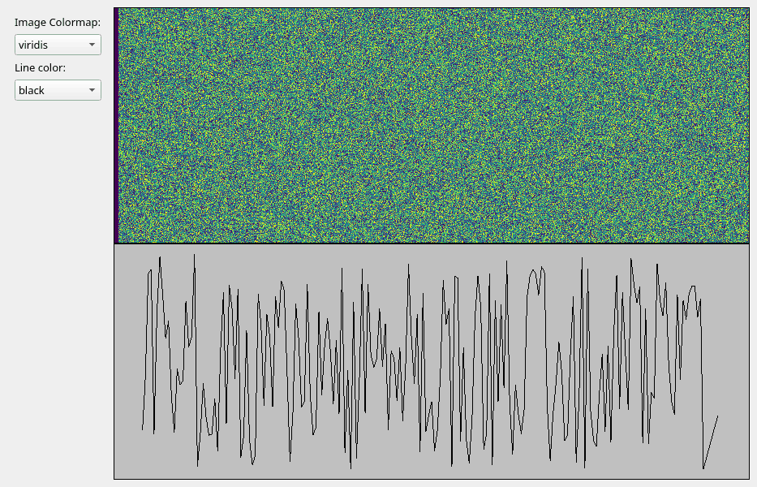

Note
Click here to download the full example code
Update data using a loop in a background thread#
Update VisPy visualizations from a background QThread.
Waiting for data source to close gracefully...
Run data creation is starting
import time
from math import sin, pi
import numpy as np
from PyQt5 import QtWidgets, QtCore
from vispy.scene import SceneCanvas, visuals
from vispy.app import use_app
IMAGE_SHAPE = (600, 800) # (height, width)
CANVAS_SIZE = (800, 600) # (width, height)
NUM_LINE_POINTS = 200
COLORMAP_CHOICES = ["viridis", "reds", "blues"]
LINE_COLOR_CHOICES = ["black", "red", "blue"]
class Controls(QtWidgets.QWidget):
def __init__(self, parent=None):
super().__init__(parent)
layout = QtWidgets.QVBoxLayout()
self.colormap_label = QtWidgets.QLabel("Image Colormap:")
layout.addWidget(self.colormap_label)
self.colormap_chooser = QtWidgets.QComboBox()
self.colormap_chooser.addItems(COLORMAP_CHOICES)
layout.addWidget(self.colormap_chooser)
self.line_color_label = QtWidgets.QLabel("Line color:")
layout.addWidget(self.line_color_label)
self.line_color_chooser = QtWidgets.QComboBox()
self.line_color_chooser.addItems(LINE_COLOR_CHOICES)
layout.addWidget(self.line_color_chooser)
layout.addStretch(1)
self.setLayout(layout)
class CanvasWrapper:
def __init__(self):
self.canvas = SceneCanvas(size=CANVAS_SIZE)
self.grid = self.canvas.central_widget.add_grid()
self.view_top = self.grid.add_view(0, 0, bgcolor='cyan')
image_data = _generate_random_image_data(IMAGE_SHAPE)
self.image = visuals.Image(
image_data,
texture_format="auto",
cmap=COLORMAP_CHOICES[0],
parent=self.view_top.scene,
)
self.view_top.camera = "panzoom"
self.view_top.camera.set_range(x=(0, IMAGE_SHAPE[1]), y=(0, IMAGE_SHAPE[0]), margin=0)
self.view_bot = self.grid.add_view(1, 0, bgcolor='#c0c0c0')
line_data = _generate_random_line_positions(NUM_LINE_POINTS)
self.line = visuals.Line(line_data, parent=self.view_bot.scene, color=LINE_COLOR_CHOICES[0])
self.view_bot.camera = "panzoom"
self.view_bot.camera.set_range(x=(0, NUM_LINE_POINTS), y=(0, 1))
def set_image_colormap(self, cmap_name: str):
print(f"Changing image colormap to {cmap_name}")
self.image.cmap = cmap_name
def set_line_color(self, color):
print(f"Changing line color to {color}")
self.line.set_data(color=color)
def update_data(self, new_data_dict):
print("Updating data...")
self.image.set_data(new_data_dict["image"])
self.line.set_data(new_data_dict["line"])
def _generate_random_image_data(shape, dtype=np.float32):
rng = np.random.default_rng()
data = rng.random(shape, dtype=dtype)
return data
def _generate_random_line_positions(num_points, dtype=np.float32):
rng = np.random.default_rng()
pos = np.empty((num_points, 2), dtype=np.float32)
pos[:, 0] = np.arange(num_points)
pos[:, 1] = rng.random((num_points,), dtype=dtype)
return pos
class MyMainWindow(QtWidgets.QMainWindow):
closing = QtCore.pyqtSignal()
def __init__(self, canvas_wrapper: CanvasWrapper, *args, **kwargs):
super().__init__(*args, **kwargs)
central_widget = QtWidgets.QWidget()
main_layout = QtWidgets.QHBoxLayout()
self._controls = Controls()
main_layout.addWidget(self._controls)
self._canvas_wrapper = canvas_wrapper
main_layout.addWidget(self._canvas_wrapper.canvas.native)
central_widget.setLayout(main_layout)
self.setCentralWidget(central_widget)
self._connect_controls()
def _connect_controls(self):
self._controls.colormap_chooser.currentTextChanged.connect(self._canvas_wrapper.set_image_colormap)
self._controls.line_color_chooser.currentTextChanged.connect(self._canvas_wrapper.set_line_color)
def closeEvent(self, event):
print("Closing main window!")
self.closing.emit()
return super().closeEvent(event)
class DataSource(QtCore.QObject):
"""Object representing a complex data producer."""
new_data = QtCore.pyqtSignal(dict)
finished = QtCore.pyqtSignal()
def __init__(self, num_iterations=1000, parent=None):
super().__init__(parent)
self._should_end = False
self._num_iters = num_iterations
self._image_data = _generate_random_image_data(IMAGE_SHAPE)
self._line_data = _generate_random_line_positions(NUM_LINE_POINTS)
def run_data_creation(self):
print("Run data creation is starting")
for count in range(self._num_iters):
if self._should_end:
print("Data source saw that it was told to stop")
break
time.sleep(1.0)
# Uncomment to mimic a long-running computation
# time.sleep(3)
image_data = self._update_image_data(count)
line_data = self._update_line_data(count)
data_dict = {
"image": image_data,
"line": line_data,
}
self.new_data.emit(data_dict)
print("Data source finishing")
self.finished.emit()
def _update_image_data(self, count):
img_count = count % IMAGE_SHAPE[1]
self._image_data[:, img_count] = img_count / IMAGE_SHAPE[1]
rdata_shape = (IMAGE_SHAPE[0], IMAGE_SHAPE[1] - img_count - 1)
self._image_data[:, img_count + 1:] = _generate_random_image_data(rdata_shape)
return self._image_data.copy()
def _update_line_data(self, count):
self._line_data[:, 1] = np.roll(self._line_data[:, 1], -1)
self._line_data[-1, 1] = abs(sin((count / self._num_iters) * 16 * pi))
return self._line_data
def stop_data(self):
print("Data source is quitting...")
self._should_end = True
if __name__ == "__main__":
app = use_app("pyqt5")
app.create()
canvas_wrapper = CanvasWrapper()
win = MyMainWindow(canvas_wrapper)
data_thread = QtCore.QThread(parent=win)
data_source = DataSource()
data_source.moveToThread(data_thread)
# update the visualization when there is new data
data_source.new_data.connect(canvas_wrapper.update_data)
# start data generation when the thread is started
data_thread.started.connect(data_source.run_data_creation)
# if the data source finishes before the window is closed, kill the thread
data_source.finished.connect(data_thread.quit, QtCore.Qt.DirectConnection)
# if the window is closed, tell the data source to stop
win.closing.connect(data_source.stop_data, QtCore.Qt.DirectConnection)
# when the thread has ended, delete the data source from memory
data_thread.finished.connect(data_source.deleteLater)
win.show()
data_thread.start()
app.run()
print("Waiting for data source to close gracefully...")
data_thread.wait(5000)
Total running time of the script: ( 0 minutes 8.396 seconds)